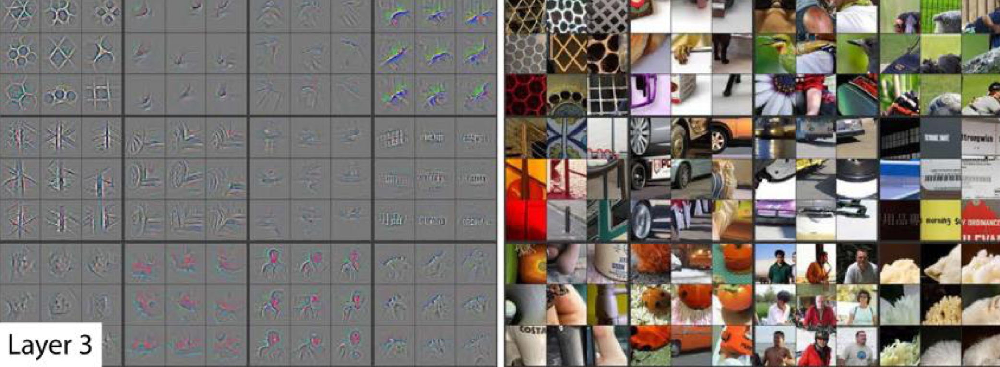
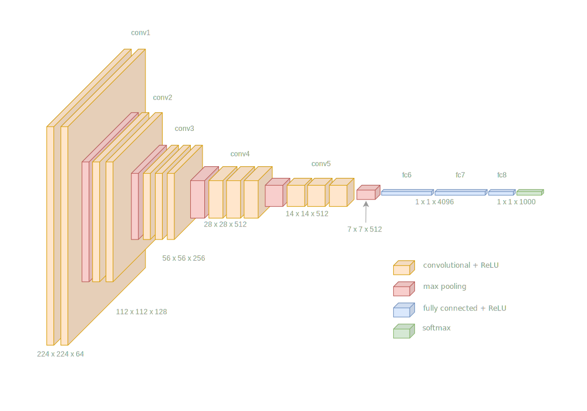
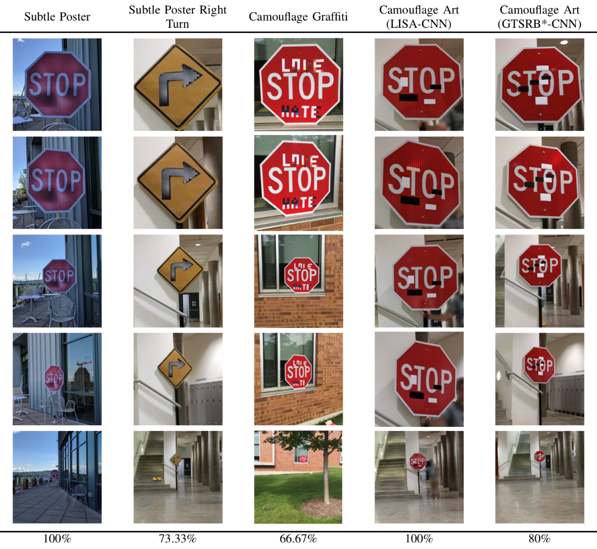
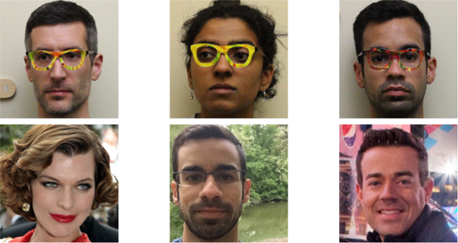
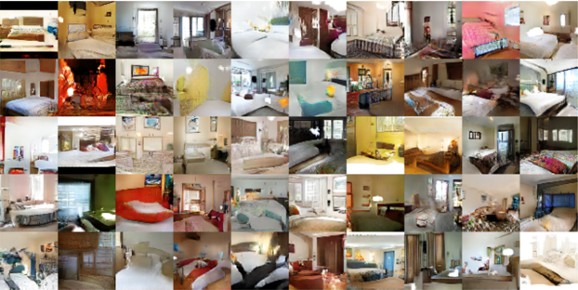

...
def forward(self, x):
x = self.pool(F.relu(self.conv1(x)))
x = self.pool(F.relu(self.conv2(x)))
x = x.view(-1, 800)
x = F.relu(self.fc1(x))
x = self.output(x)
return x
After 300 iterations over training set: 99.21% validation accuracy.
Model
Error
FC64
2.85%
FC256-FC256
1.83%
SimpLeNet
0.79%
Learned Kernels
Image from Krizhevsky 2012Image from Zeiler 2014
Image from Zeiler 2014
Transfer Learning
Original AlexNet trained for 90 epochs, using 2 GPUs and took 6 days!
Pre-Trained Networks
The term “Transfer Learning” simply means using a pre-trained network to save on training.
Motivation enough to use a pre-trained network.
but, there are bigger considerations.
What about data?
Pre-Trained Networks
The greatest barrier to supervised machine learning is the lack of labelled data.
use a network trained on one task to solve another problem
greatly reduces the requirement for labelled data
Researchers have developed neural network architectures for Computer Vision tasks.
The parameters of these networks have been made available for further research.
What can we use transfer learning for?
classifying images not part of the original ImageNet dataset.
object detection
boundary detection
VGG16
The VGG group at Oxford university trained VGG-16 and VGG-19 for ImageNet classification.
Karen Simonyan & Andrew Zisserman, (2014)
VGG16
VGG-16 is a good choice for a first step in transfer learning.
It has a relatively simple architecture:
Convolutional layers, increasing in depth, decreasing spatially.
fully-connected layers for classification.
Max-pooling layers.
ReLU activation functions.
VGG16
VGG16 - architecture
VGG16
This kind of architecture works well for many Computer Vision tasks.
Small convolutional filters (3x3)
Max-pooling layers
ReLU activation functions
Transfer Learning
Two strategies for transfer learning are:
Fine tuning the whole network on new data, with a small learning rate.
Leave all the early layers as is and use as a feature extractor.
In both cases, we usually have to replace the last fully-connected layers.
Transfer Learning
Code Examples
There are examples of both fine tuning and feature extraction at the example repository:
In numerically diverse data, learning will be dominated by larger values.
Arguably less important with image data.
Many pre-trained networks expect standardised data.
Data Standardisation
For regression tasks, we need to standardise the output data too.
Don’t forget to invert the predictions back to the original scale.
Data Standardisation
Extract sample data: pixel values in the case of images.
Compute the mean and standard deviation of the samples.
\[
x' = \frac{x - \mu(x)}{\sigma(x)}
\]
Batch Size
Small batch sizes, approximately 1-10.
Small batch size results in regularisation, with lower ultimate error.
Low memory requirements.
Need to compensate with lower learning rate.
More epochs required.
Batch Size
Large batch sizes, greater than 500-1000.
Fast due to high parallelism
High memory usage - can run out of RAM on large networks.
Won’t reach the same error rate as smaller batches.
may not learn at all…
Batch Size
Typical choice around 64-256, lots of experiments use ~100.
Effective training - reaches acceptable error rate or loss.
Balanced between speed and memory usage.
Batch Size
Increasing mini-batch size will improve performance up to the point where all GPU units are in use.
Increasing it further will not improve performance; it will reduce accuracy!
Learning Rate
The amount of change applied to the parameters at each iteration.
Small learning rates can be slow to train.
Small learning rates can get stuck in local minima.
Large learning rates can be unstable and cause divergence.
Experiment with different learning rates.
Increase or decrease by a factor of 10.
DropOut
Over-fitting is a well-known problem in machine learning.
Dropout reduces over-fitting.
DropOut
During training, randomly choose units to ‘drop out’.
Set output to 0, with probability \(P\), usually around 0.5.
Compensate by multiplying other values by \(\frac{1}{1 - P}\).
Turn off dropout during testing.
DropOut
Activates a different subset of units for each sample.
Causes units to learn more robust features.
Units can’t rely on the presence of specific features.
Emulates an ensemble of models.
DropOut
“I went to my bank. The tellers kept changing and I asked one of them why? He said he didn’t know but they got moved around a lot. I figured it must be because it would require cooperation between employees to successfully defraud the bank… This made me realise that randomly removing a different subset of neurons on each example would prevent conspiracies and thus reduce over fitting.”
Batch normalisation
Batch normalization (Ioffe, et al. 2015).
Recommended in most cases.
Lets you build deeper networks.
Speeds up training; loss and error drop faster per epoch.
Batch normalisation
Apply between internal layers.
Use BatchNorm2d with a convolutional layer.
Use BatchNorm1d with a fully-connected layer.
Batch normalisation
Standardise activations per-channel between network layers.
Solves problems caused by exponential growth or shrinkage of layer activations in deep networks.
Dataset augmentation
Reduce over-fitting by enlarging training set.
Artificially modify existing training samples to make new ones.
Apply transformations such as move, scale, rotate, reflect, etc.
Work in the Field
Some interesting work in the field…
Adversarial attacks
Robust Physical-World Attacks on Deep Learning Models. Eykholt, et al. 2018.
Accessorize to a Crime: Real and Stealthy Attacks on State-of-the-Art Face Recognition. Sharif, et al. 2016.
Accessorize to a Crime
Generative Adversarial Networks
Generative Adversarial Nets. Goodfellow et al. 2014.
Train two networks; one given random parameters to generate an image, another to discriminate between a generated image and one from the training set.
Unsupervised representation Learning with Deep Convolutional Generative Adversarial Nets. Radford, et al. 2015.
DCGANDCGAN vector arithmetic
A Style-Based Generator Architecture for Generative Adversarial Networks. Karras, et al. 2018
Style GAN
Summary
Convolutional Neural Networks
Transfer Learning
Useful techniques
Deep learning examples.
Reading:
Deep Learning, Goodfellow et al: https://www.deeplearningbook.org
the papers mentioned in the lecture
visualisations of network training: https://losslandscape.com